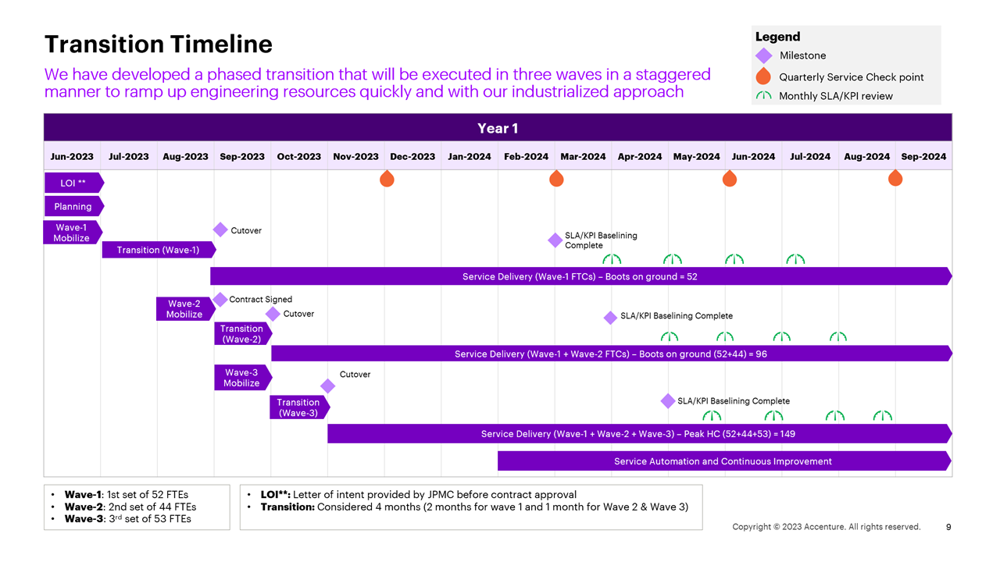

Corporate Graphic Design.
Tools Utilized: Adobe Creative Suite, MS PowerPoint, Keynote, FigmaCreated a design system encompassing a color palette, typography, icons, buttons, visual components and layout for a major Healthcare Insurance Provider. The brand identity and color selection were key factors in our team's success. Our client was deeply moved by our response, as it resonated with their end-users.
Designed the RFP Response for a major Healthcare Insurance Corporation. For this project, the sales team opted for Accenture's brand style guide. This endeavor posed a significant challenge for me as a designer, requiring the translation of highly complex cloud migration concepts into easily understandable infographics to effectively communicate our solution.
Presentation, layout and visual design for a major BIO-TECH company. Stablished clear style guidelines and transformed complex data and concepts into compelling and eye-catching infographics.
Handled the presentation and visual design for a prominent Financial and Banking corporation. The greatest challenge in this project was translating complex financial and IT concepts into compelling visuals and storytelling infographics. My active involvement in this opportunity was pivotal; The effective communication of our solution to the client significantly contributed to the sales team securing a contract, ultimately boosting sales for Q4 FY23.
